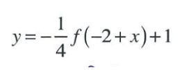

A contractor must pay a penalty if their project work is not completed on time. The first day penalty is $300, and the penalty increases to $500 on the second day, and $700 on the third day, so forth. The contractor accumulated a total penalty cost of $4500. How many days overdue was this project?
A fruit fly receives genetic material from both two parents. Each of their parents also receives genetic material from their two parents, and so forth. So each fruit fly receives genes from 2 parents, 4 grandparents, 8 great-grandparents and so on. How many ancestors does a fruit fly have going back 15 generations?
Describe in order the transformations of:

A toy spaceship is fired from the ground upwards. The relation between the height in feet, h, and the time in seconds, t from the launch, can be described by the equation h = -16t2 + 64t. How long does the rocket stay more than 48 feet above the ground?
Factor the following equation: 5x2 + 23x - 10
You invest m dollars in an account that earns a simple interest of 6 percent. Suppose at the end of the year you deposit $500 into the account. Write the function of f(m).
Consider the function, y = 5cos(3x - π) + 20, what is the amplitude of this function?
Find the sum of the reference angle of 350 degrees and the reference angle of 420 degrees.
Find the eighth term of this sequence: -7, 21, -63, ...
In 2014, a county in California had 783 miles of paved roads. Starting in 2015, this county has been building 8 miles of new paved roads every year. At this rate, if x is the years after 2014, how many paved roads will there be in 2030?
Kate works in a supermarket. Three times per year she is allowed to combine her employee discount with special sale prices. Let x be the retail price of a box of cereal. If Kate gives her employees a discount of 25%, what is the function f(x) that represents the cost of the box of cereal?
To find the speed of sound in dry air where the temperature in degrees Celsius is x, the function can be written as, f(x) = 331.4 + 9.6x. Find the temperature when the speed of sound is at 350 m/s.
Mr. Smith puts $1000 into an account that earns 4.5% annual interest. The interest is compounded annually and there are no withdrawals. How much money will be in his account at the end of 30 years? Round to the nearest hundredth.
You can use the equation k logA = N to estimate the number, N, of species that live in a region, A. The parameter k is determined by the conditions in the region. The rain forest has 2700 species that live in an area of 500 km2. How many species would still remain if half of the forest area was destroyed?
What is the expression written as a single logarithm? 4logx - 6log(x+2)